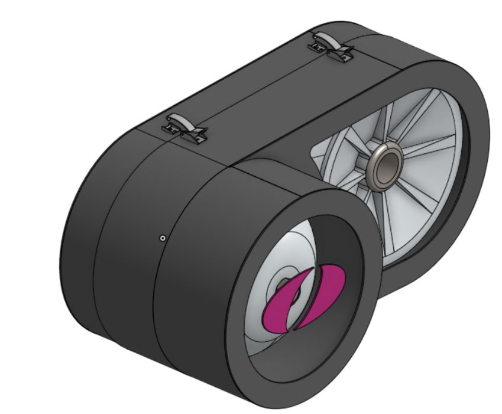
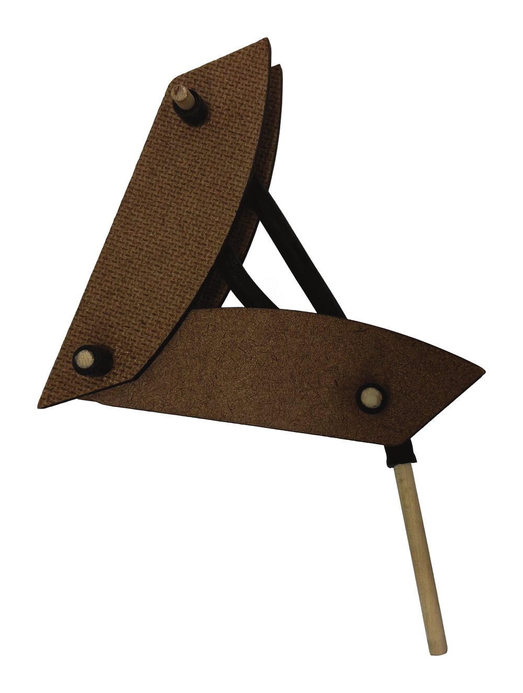
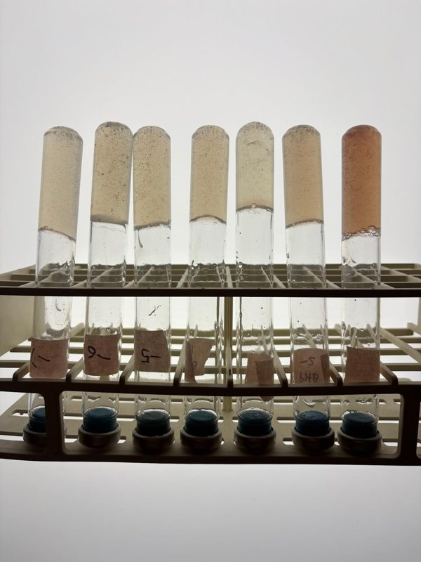

Projects
Mechanical design, medical robotics, and lab research from the past year. Select any project for the full story.

Surgical Robot System
A four-arm robot designed in SolidWorks to address arm-to-arm collisions, a known da Vinci problem. Thinner arm links open up clearance between neighboring arms.
5-DOF Robotic Arm
A 3D printed arm with custom gearboxes, driven by NEMA 17 steppers and an Arduino Uno. I'm now implementing inverse kinematics.

Two-Stage Planetary Gearbox
A compact gearbox of about 10:1 that raises each joint's theoretical output torque from 0.55 Nm to 5.6 Nm.

CVT Guard
A redesigned guard that follows the pulley shape and splits in two on quick-release latches for easier service.

Click Beetle Hopper
A hopper based on click beetle and froghopper anatomy that jumps 10 cm, built from reusable modules and bent rubber tubing.

PHB-Degrading Microbial Community
Isolating and culturing members of an anaerobic community that degrades PHB bioplastic.
Braille Reader
Mechanical and actuation work on a braille reader that improves access to text for blind users.

Urban Wind Simulation
2D simulations of wind between city buildings in ANSYS Fluent, to understand risks for autonomous drone delivery.